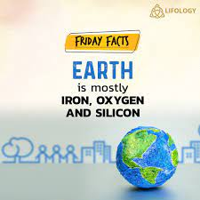
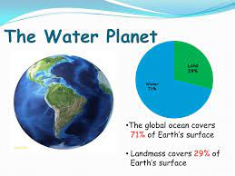
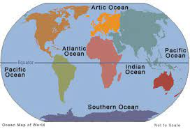
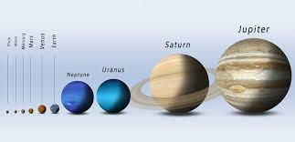

Amazing Fun Facts about our Human Body
1. The Earth is mostly iron and oxygen
Did you know that 32.1% of the Earth is made up of iron? This iron accounts for around 88% of the Earth’s core. The Earth is also 30.1% oxygen, which makes up about 47% of its crust.
2. 7.4 billion people live on Earth
We already knew there were a lot of humans, but in actual fact there are 7.4 billion of us roaming the planet. It is estimated that by 2100 the population will increase to 11.2 billion.
The largest population in a single country is China, where it's estimated there are more than 1.38 billion people.
3. 71% of the Earth’s surface is water
There’s a reason why Earth is nicknamed ‘the Blue Planet’. 71% of its entire surface is covered by water, with 96.5% of this water being found in the ocean.
If all of the Earth’s water was put into a sphere, it would have a diameter of around 860 miles. This is almost the same amount of distance it would take to travel from Inverness in Scotland to Frankfurt in Germany.
4. There are more than 400 species of sharks
Sharks have existed for longer than 450 million years. Calculating animal populations is more difficult than counting human populations, but experts believe that there are over 400 different types of sharks in the world. These species include the great white and the black tip reef shark.
5. A year on Earth isn’t 365 days
Perhaps one of the most surprising facts, a year on Earth isn’t actually the same 365 days we count a year as. It’s actually 365.25 days, which explains why we need to have a Leap Year every four years.
6. There are five oceans
The Earth contains five oceans: the Arctic, Atlantic, Indian, Pacific, and Southern.
The biggest ocean on the planet is the Pacific Ocean, which occupies a third of the Earth's total surface – around 155 million square kilometers. Some of the creatures that call the Pacific Ocean home include clownfish and four species of seahorse.
7. Earth isn’t the biggest planet
Contrary to what you might think, Earth isn’t actually one of the biggest planets. Whilst it’s bigger than the likes of Venus, Mars, and Mercury, it’s nothing compared to the planetary giants such as Jupiter and Saturn. Jupiter has a diameter of around 88,695 miles, which makes it 11.2 times bigger than Earth.